This gallery presents ten of the most visited and historically important tourist sites in Ghana. I chose this theme because Ghana is rich in history, culture and natural beauty, and many people do not know how much our country has to offer. The gallery takes the visitor from the coastal castles of Cape Coast and Elmina to the wildlife of Mole National Park.
Visitors should expect to see historical forts, waterfalls, national parks, and cultural landmarks. Each picture has a caption explaining what it shows and why the site is important. The gallery is organized into categories so it is easy to explore.
|
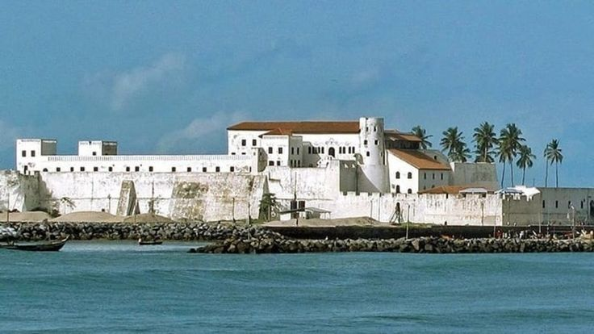 Cape Coast Castle A historic slave-trade castle. |
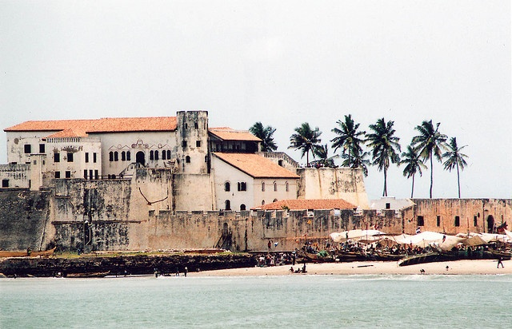 Elmina Castle The oldest European building in Africa. |
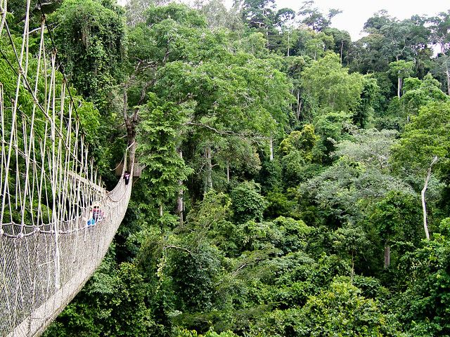 Kakum National Park Famous for its canopy walkway. |
|
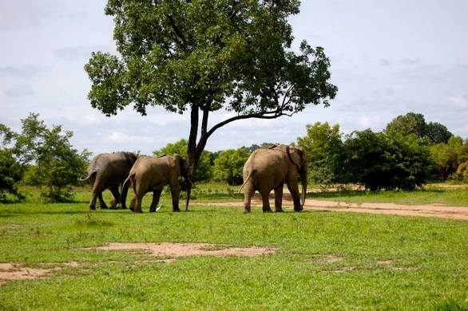 Mole National Park Ghana's largest wildlife park. |
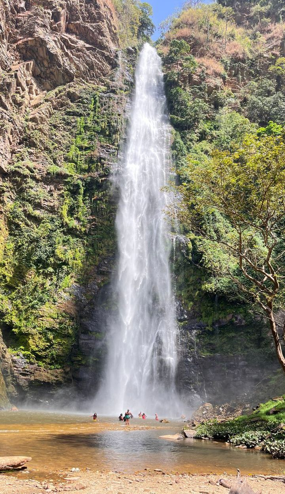 Wli Waterfalls The tallest waterfall in Ghana. |
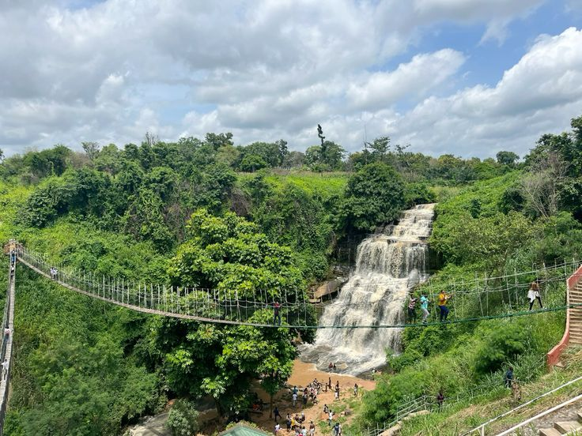 Kintampo Waterfalls A popular waterfall in Bono East. |
|
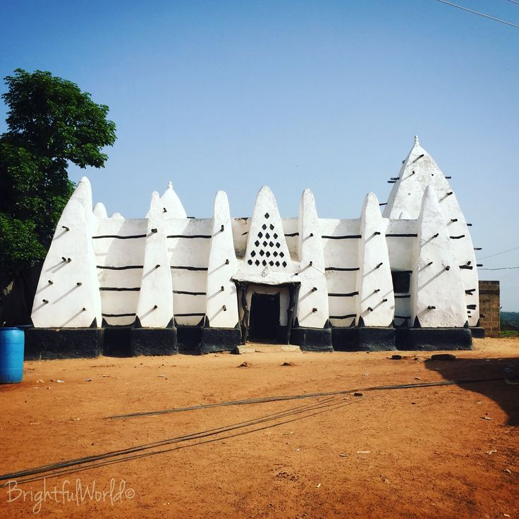 Larabanga Mosque One of the oldest mosques in West Africa. |
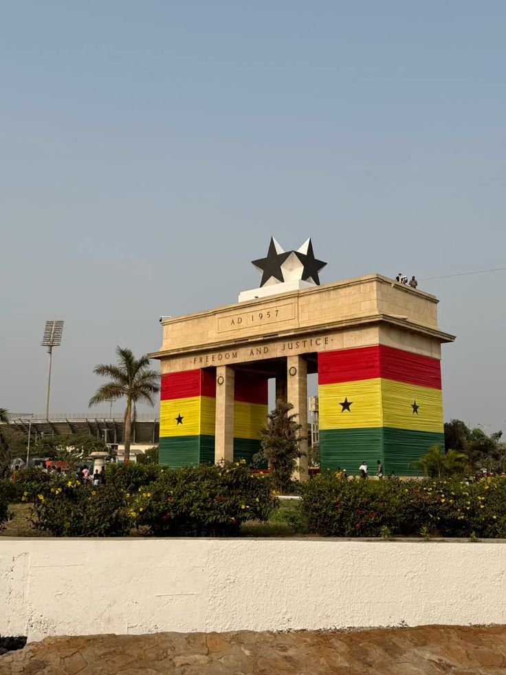 Independence Square Accra's iconic ceremonial ground. |
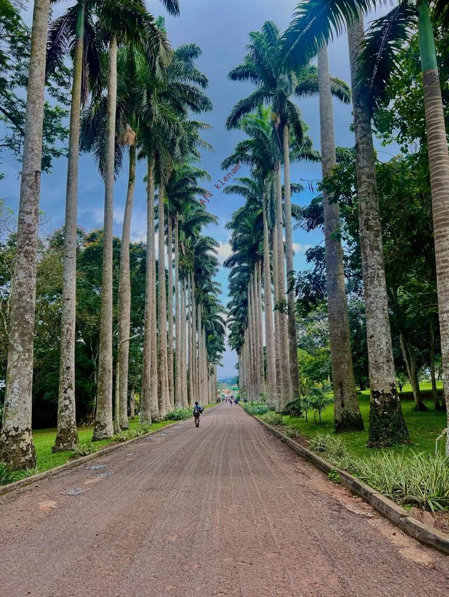 Aburi Botanical Gardens A peaceful garden in the Eastern Region. |
|
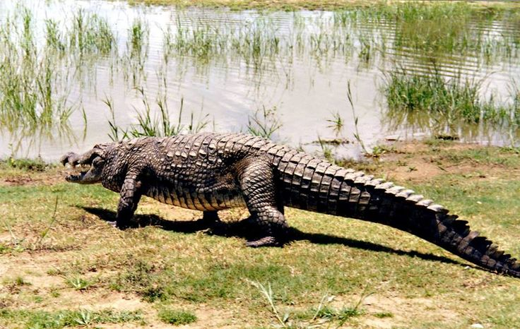 Paga Crocodile Pond Friendly crocodiles in the Upper East. |
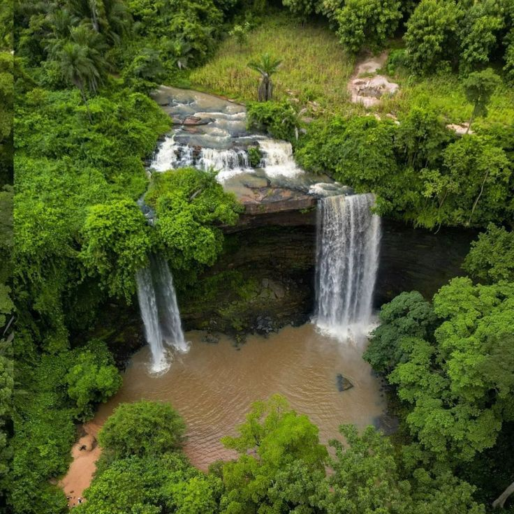 Boti Falls A twin waterfall in the Eastern Region. |
|
| No. | Title of Image | Description | Region | Year |
|---|---|---|---|---|
| 1 | Cape Coast Castle | Historic slave-trade castle | Central | 1653 |
| 2 | Elmina Castle | Oldest European building in Africa | Central | 1482 |
| 3 | Kakum National Park | Canopy walkway and rainforest | Central | 1931 |
| 4 | Mole National Park | Largest wildlife park in Ghana | Savannah | 1971 |
| 5 | Wli Waterfalls | Tallest waterfall in Ghana | Volta | — |